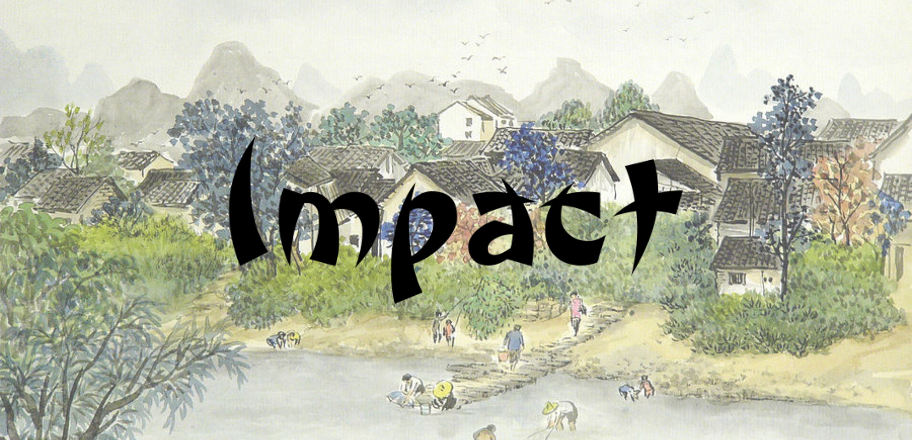
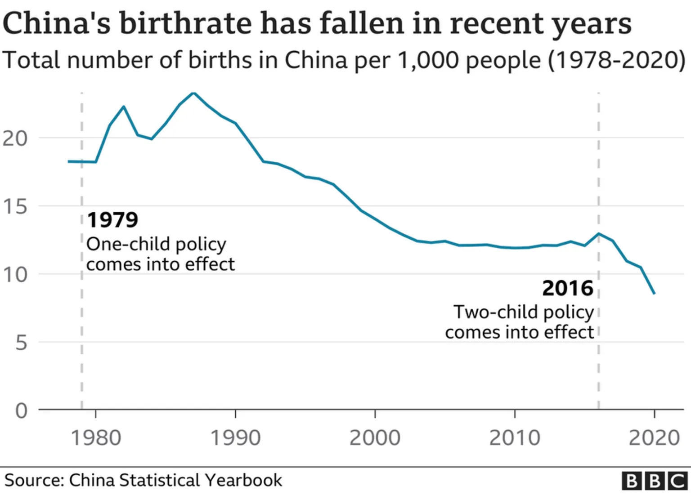
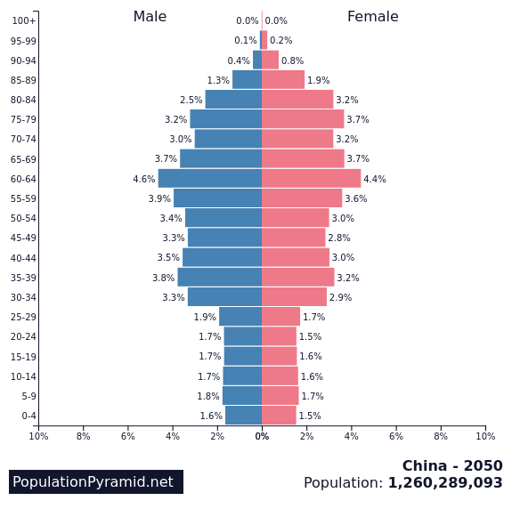
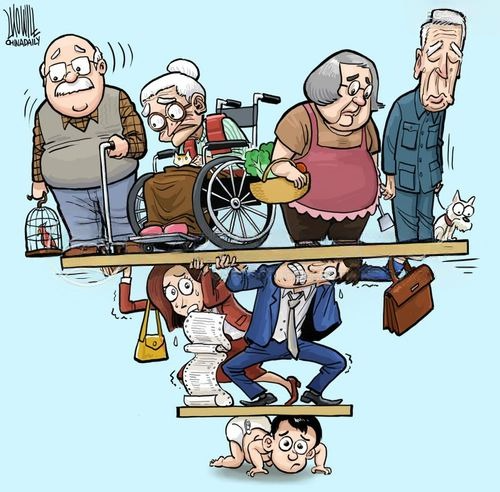
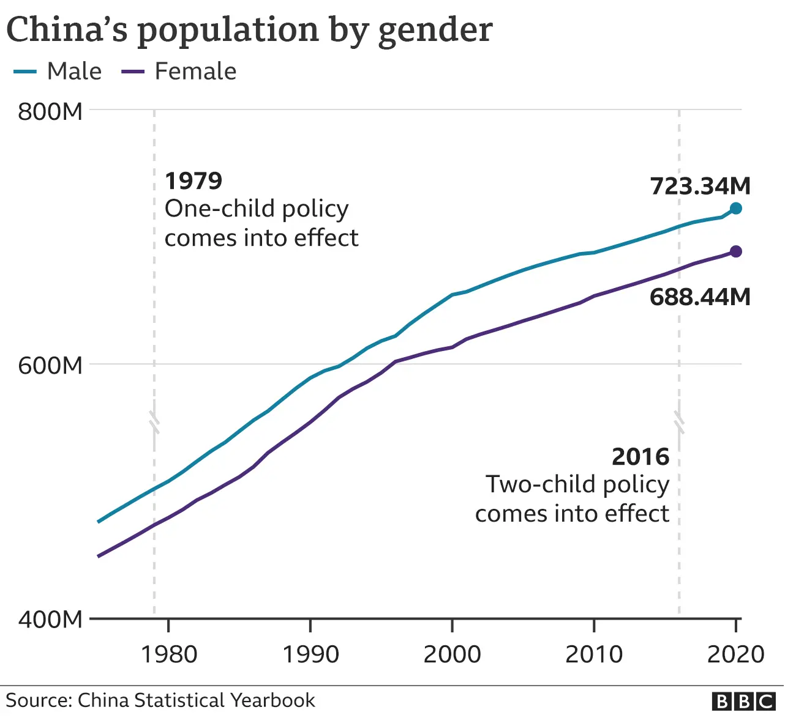

Courtesy of Zhou Yuwei
Short Term Consequences
As Deng Xiaoping anticipated, the One-Child Policy prevented more serious famine and improved the Chinese economy.
"Our country has prevented 338 million births and saved $130 million worth of resources."
— Chinese Government
Female Infant Abandonment & Adoption
Not much is known about how many children were abandoned, but it is known that the US alone adopted 82,674 children, mostly females, from China, not to mention other nations. On top of that, there were many more children who grew up in orphanages or died shortly after abandonment.
Parents' Heartlessness: Zhengzhou Fengchan Road Police Station "Finds" Two Baby Girls in One Day
June 2, 2010, 17:38, Source: Dahe Net, Reporter Wang Shudong, Correspondent Zeng Qingxiu
The parents were heartless. Police officers at the Fengchan Road Police Station in Zhengzhou found two baby girls in one day. The officers are urging the parents to quickly go to the welfare institution to reclaim their children, as abandoning children is illegal.
At 5:30 AM on May 31, 2010, the Fengchan Road Police Station received a report from the public stating that a baby had been abandoned 100 meters south of the intersection of Huanghe Road and Jing'er Road, on the west side of the road. After receiving the report, the police immediately rushed to the scene and found a baby girl wrapped in a deep red blanket, wearing a bright red warm jacket, with a white jade buddha pendant hanging from her neck, threaded with red string. Next to the baby, there was a red plastic bag containing a packet of "Yili" infant formula and a note stating the baby’s birthdate as September 3, 2009.
At 5:33 AM, the police received another report from the public about another abandoned baby. This time, the baby was found 50 meters east of the south gate of the Henan Provincial People's Hospital, on the north side of the road. Police arrived at the scene and found another baby girl wrapped in an orange-red quilt, wearing a red warm jacket, approximately six months old.
After taking the two babies back to the police station, officers quickly prepared some porridge for the babies. They held the babies, carefully took care of them, and fed them milk powder and porridge. Police Chief Xia Manhong arranged for officers to care for the babies while sending others to visit the area around the provincial hospital. Despite extensive searching, no family members were found. After contacting the local civil affairs office, the two babies were sent to the Children's Welfare Institution.
The police remind the parents who abandoned their children: we hope your conscience will prompt you to quickly go to the Children's Welfare Institution and reclaim your children. Since you gave birth to them, you have the obligation to raise them. Abandoning children is an illegal act.
Long Term Consequences
Long term consequences to the policy include demographic changes like gender imbalance and significant decrease in population numbers.

Courtesy of BBC
"China's census, released earlier this month, showed that around 12 million babies were born last year - a significant decrease from the 18 million in 2016, and the lowest number of births recorded since the 1960s."
— BBC, 2021
The one-child policy led to a reduced birth rate, causing a decline in population growth. It also accelerated population aging.
"In 2050, the population growth rate of China is -0.79%, sex ratio is 1.02 (1.12 for working age), dependency ratio is 69.1%.The elderly population will account for 30.92% of China's population in 2050, the problem of population aging is serious."
— Population-Pyramid.net, 2025

Courtesy of Population Pyramid

Courtesy of Cagle.com
"The issue which has received the most attention is the enormous impact exerts on family support, which refers to the financial support, instrumental support, and emotional support which children (especially the adult son and his family) offer to their elderly parents, and a series of social services such as those providing medical expenses, care of sick parents, and funeral services (Wang 2003)."
— National Library of Medicine, 2011
Because of the favoring of male children, there was also a result of gender imbalance.
"There is a severe gender imbalance in the country - last year [2020], there were 34.9 million more males than females."
— BBC, 2021

Courtesy of BBC
I believe that although there were certain undeniable short term gains that came from the policy, the overall cost from long term repercussions outweighs the benefit, demonstrating the harmful nature of the One-Child Policy.